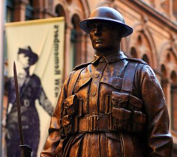

The Origins
During a speech to the East Otago Federation of Women's Institutes, Professor Helen Leach, of the Archaeology Department of the University of Otago in New Zealand, stated that the first published use of the name Anzac in a recipe was in an advertisement in the 7th edition of St Andrew's Cookery Book (Dunedin, 1915). This was a cake, not a biscuit, and there were no mixing instructions. A recipe for "Anzac Biscuits" appeared in the War Chest Cookery Book (Sydney, 1917) but was for a different biscuit altogether. The same publication included a prototype of today's Anzac biscuit, called Rolled Oats Biscuits. The combination of the name Anzac and the recipe now associated with it first appeared in the 9th edition of St Andrew's Cookery Book (Dunedin, 1921) under the name "Anzac Crispies". Subsequent editions renamed this "Anzac Biscuits" and Australian cookery books followed suit. Professor Leach also said that further research might reveal earlier references to the name and recipe in Australia or New Zealand.
What Was Their Purpose?
Rather than being sent to the front lines for the soldiers to eat as some people think, ANZAC biscuits were commonly eaten at galas, fetes and other public events such as parades, where they were sold to raise money to support the war effort. At the time they were often called "soldier's biscuits", and the fundraising that was organised by the Patriotic Funds accumulated 6.5 million pounds to support New Zealand troops in the war.